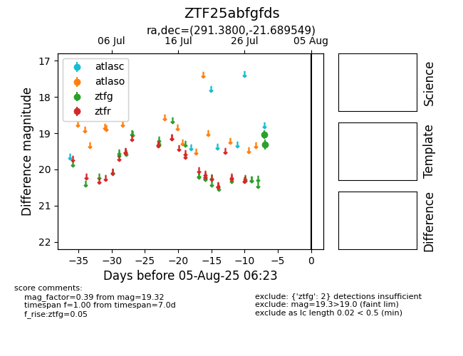

Target ZTF25abfgfds at 2025-08-05 07:33, see:
FINK: fink-portal.org/ZTF25abfgfds
Lasair: lasair-ztf.lsst.ac.uk/objects/ZTF25abfgfds
ALeRCE: alerce.online/object/ZTF25abfgfds
alt names
ZTF25abfgfds (ztf,fink)
coordinates:
equatorial (ra, dec) = (291.3800,-21.68955)
galactic (l, b) = (16.7800,-16.92081)
photometry
last ztfg=19.32
2 ztfg detections
